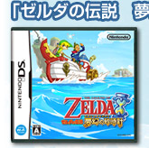
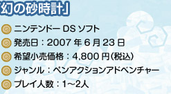
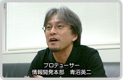
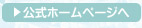
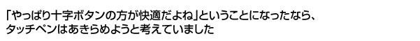
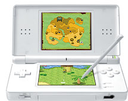
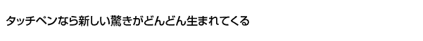
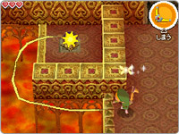

そしてなにより、「タッチペンのほうが可能性を感じる。どんどんいろんな遊びが生まれてくる」という事実があったんです。
リンクをタッチペンで動かしながら、画面のいろんなものをタッチすることで、リンクがそれに対してさまざまな反応をしてくれる。この一連の操作が、とにかく気持ちいいわけです。頭の中で、何か考えないといけない、移動させる操作にプラスして何かアクションさせるために、別の考えをしないといけない、その流れがないんですよね。
いままでの「対象があってそれに対して移動して、ボタンを押したらこうなります」というガチガチなルールみたいなものから解放された感じがしたんです。そして面白いのはこのことが作っている側に、どんどん新しいアイデアを生み出すキッカケになってくれたんです。
|  |  |  |
|  |

| プレイされていない人から見ると、ＤＳのタッチペンに無理やりゲームを合わせているんじゃないか、というイメージがあるかもしれません。まあ、開発しているスタッフにも最初はそういうイメージが若干ありましたし、途中で見直す時期みたいなものも、もちろんあったわけです。 僕は従来の十字ボタンで動かす『ゼルダ』の良さもよく知っていますし、途中で「やっぱり十字ボタンのほうが操作が快適だよね」ということになったならば、その時点でタッチペンをあきらめようと考えていました。 タッチペンだけに操作を絞ろうとなったのは開発がどんどん進んでいく中で、タッチペンで操作をすることに問題がないということが確認できたからです。 |
 |


例えば、ブーメランだったらどんな風に操作するんだという場合は、「やっぱり飛んでいくルートを自分で決めたいよね」、「線で描いたとおりに飛んでいてくれたら、こんなに嬉しいことはないよね」とか、そういう意見が自然に出てくるという。
今回の作品は、作りながら僕らも成長していった感じです。僕らだって最初からすべての操作がタッチペンでできるって解っていたわけではないですし。でも、最終的にはアイテムの使い方でも謎解きでも”タッチペンだからこその遊び”をたくさん盛り込むことができました。